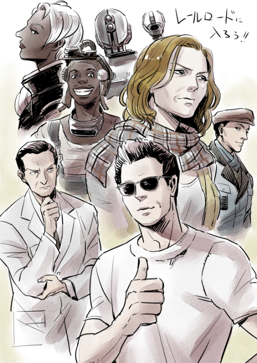

The Railroad has been in existence since at the least the time of the creation of the first successful Generation-3 synths by Institute scientists around the 2220s. Following the public's discovery of the synths during the Broken Mask incident in Diamond City in 2229, the question if they deserve the same rights as natural humans became a major subject of debate, with frequent bickering between opposing sides. Many people believed that the Institute's synths were mere machines; just another model of advanced robot. Paranoia began to develop as local residents' loved ones vanished overnight and were replaced with artificial clones that eventually malfunctioned and went berserk, as with the case with Mr. Carter. Others, however felt that synths deserved to be free, having being treated as slaves by their creators at the Institute. This is a point that makes some convinced that the synths are worthy of saving. It was from these ideals that the earliest possible incarnation of the Railroad would emerge. In 2283, an Institute insider named Liam Binet, under the alias "PATRIOT," established contact with the outside world. Tinker Tom intercepted his messages and figured out his passphrase, which was "Mass Fusion." From then on, Patriot became the Railroad's main contact in the Institute, although he himself is totally unaware of this connection for security reasons.
The good streak persisted into 2286, with Institute sightings completely ceasing for three months and just four synths rescued. However, this was once again the calm before the storm, as the Institute was gearing up to activate its reactor, while the Brotherhood decided it was time to intervene and stop its preying on the Commonwealth.